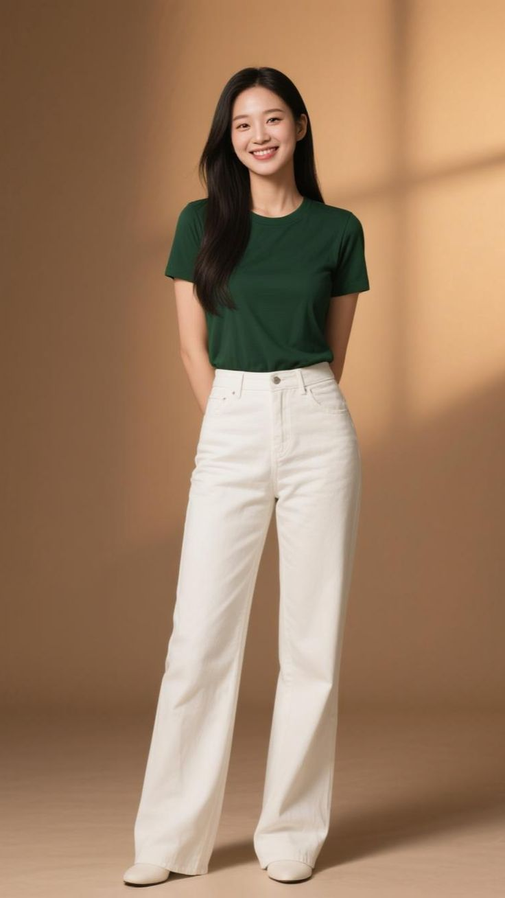
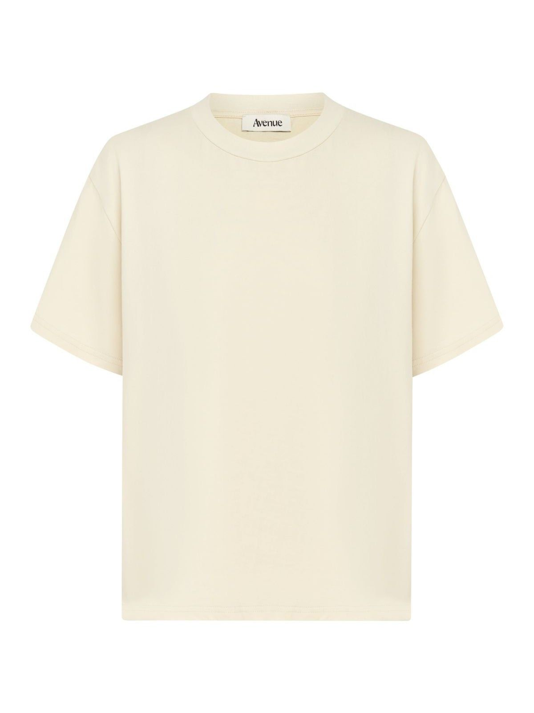
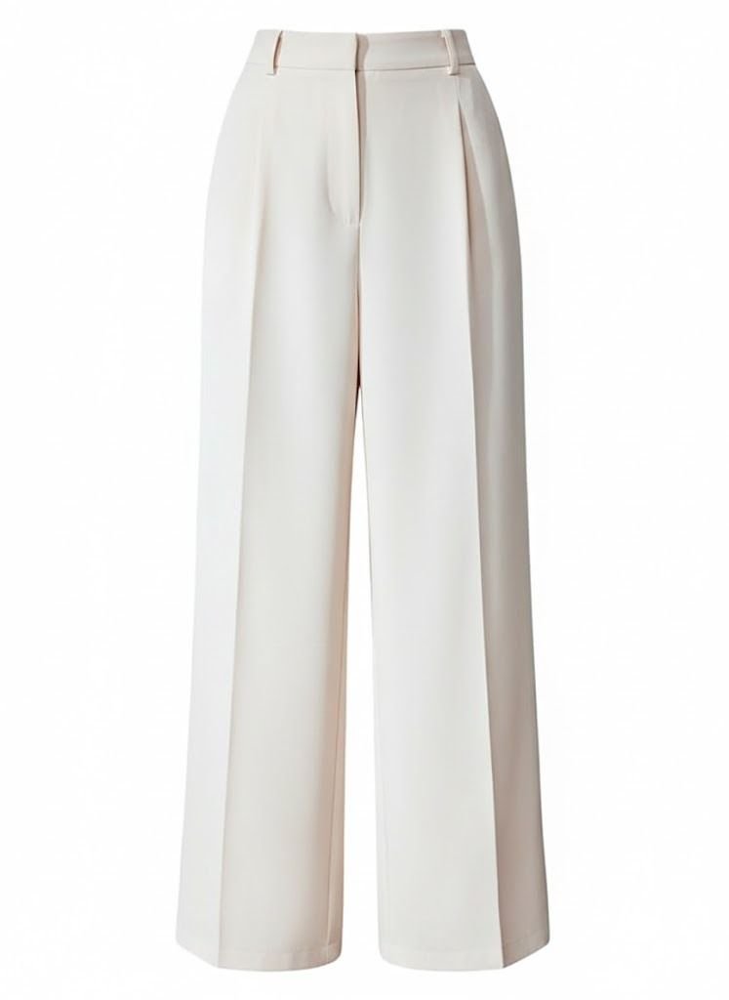
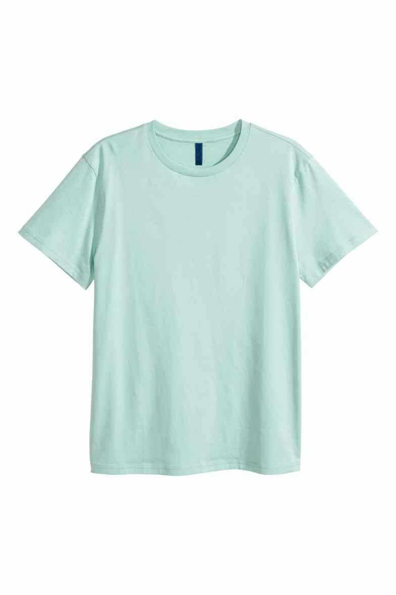
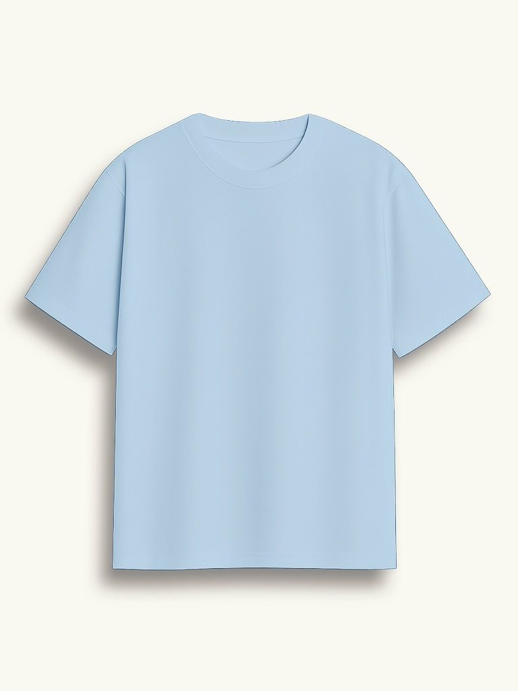
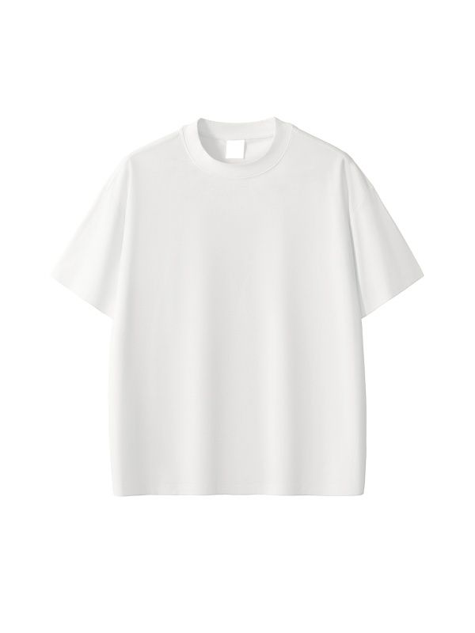

轻社交 · 通勤
酒红轻熟通勤
暖调酒红提亮肤色，收腰上衣和阔腿裤共同强化轻盈比例。
斜肩上衣阔腿长裤细跟鞋
基于你的优雅风格、X 型曲线与春季型肤色。
暖调酒红提亮肤色，收腰上衣和阔腿裤共同强化轻盈比例。


米杏与浅黄叠出温和层次，垂坠长裤延展腿部线条。

清浅绿色呼应春季型肤色，简洁剪裁让气质更明亮。


同色系上衣可搭配两种裤型，在轻松与利落之间切换。
这个场景暂时没有推荐搭配。
收腰 · 暖柔色
层次 · 强调腰线
高腰 · 修饰比例
垂坠 · 轻盈延展
简洁 · 柔和百搭

清透 · 提亮肤色

低饱和 · 日常轻松

基础 · 干净利落
这个类别暂时没有推荐单品。